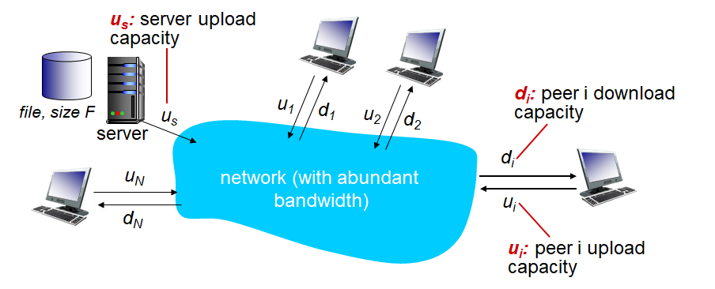

Computer Networking - P2P and Dash
Computer-Network-P2P-and-Dash
1. Pure P2P 아키텍쳐
- Always-On 서버 없음
- 임의의 엔드 시스템들이 서로 통신 (Peer)
- 피어들은 간헐적으로 연결되며 IP가 변경될 수 있음
- 예
- Bittorrent
- VoIP
클라이언트-서버 VS P2P
Q. 사이즈가
F인 파일을N개의 피어에게 전송할 때 얼마나 걸리나?
클라이언트-서버의 경우

-
서버의 입장에서
-
파일은 순차적을 보낸다.
-
한 개 보낼 때
$$F/u_s$$
-
여러 카피 보낼 때
$$N×F/u_s$$
-
-
클라이언트 입장에서
- dmin = 최소 클라이언트 다운 속도
$$F/d_{min}$$
-
결과
$$D_{cs} ≥ max(NF/u_s,F/d_{min})$$
P2P의 경우
-
서버 역할 피어
- 일단 최소한 한 개의 파일은 업로드해야함
$$F/u_s$$
-
클라이언트 역할 피어
$$F/d_{min}$$
-
최상의 경우
- 서버 역할 피어와 다른 모든
i개의 피어가 업로드 하고있을 경우
$$NF/(u_s+ \sum u_i)$$
- 서버 역할 피어와 다른 모든
-
결과
$$D_{P2P} ≥ max{F/u_s,F/d_{min},NF/(u_s + \sum u_i)} $$
차이

클라이언트-서버 구조에서는 N이 커지면 전송시간 또한 선형적으로 커진다
그러나 P2P 구조에서는 N이 커져도 클아이언트-서버 구조처럼 드라마틱하게 전송시간이 늘어나지 않는다
2. 비트토렌트

- 파일은 256KB의 청크로 나뉘어짐
- 토렌트: 파일을 공유하는 피어들의 그룹
- 트래커: 토렌트 내부의 피어들의 참여도 등을 추적
- 토렌트에 처음 참여한 유저는 청크가 없다.
- 다른 피어들에게서 청크를 받으며 점점 채워나간다
- 트래커에게서 피어 리스트를 받은 후 일부 피어들과 통신함 (neighbor)
- 다운로드와 동시에 받은 청크를 업로드 가능
- 통신중인 피어들은 나가거나 새로 들어올 수 있다
- 파일을 다 받은 후에는 토렌트에 남거나 떠날 수 있다
비트토렌트 청크
- 요청
- 피어들은 각각 다른 파일들의 조각 (청크)을 가지고 있을 수 있다.
- 그러므로 피어들은 주기적으로 다른 피어들이 가지고 있는 청크의 리스트를 요청해 받는다
- 청크들을 요청할때는 최대한 레어한 청크부터 받는다.
- 전송
- Tit-For-Tat
- 눈에는 눈 이에는 이
- 나에게 파일을 보내야 나도 너에게 보낸다
- 자신에게 가장 높은 속도로 청크를 보내고 있는 4명의 피어에게 청크를 전송한다
- 나머지에게는 전송하지 않는다 (Chocked)
- 해당 4명의 피어 리스트는 10초마다 한번씩 갱신된다
- Optimistically Unchoke
- 30초마다 추가로 랜덤하게 피어를 골라 청크를 전송한다
- 해당 피어가 지금 4명의 피어 리스트에 있는 피어들보다 빠르다면
- 그 피어가 새로운 Top 4가 될 것
- Tit-For-Tat
3. 비디오 스트리밍과 CDN
비디오 스트리밍
- 비디오 트래픽이 인터넷 Bandwidth를 가장 많이 잡아먹음
- 서비스 업체들의 고민
- 어떻게 수억명이 넘는 유저들을 다 수용하는가?
- 하나의 서버로는 절대 수용 못한다 (네임서버 기억)
- 유저마다 다른 환경
- PC, 모바일
- 각기 다른 인터넷 속도 등
- 어떻게 수억명이 넘는 유저들을 다 수용하는가?
- 솔루션
- 분산된, 애플리케이션 레벨의 인프라 서비스 (DASH)
멀티미디어: 비디오
- 비디오란
- 고정된 속도로 디스플레이되는 연속된 이미지
- 예) 24프레임
- 이미지
- 픽셀의 집합
- 각 픽셀은 비트로 표현됨
- 코딩
- 이미지 간의 중복성을 이용해 이미지 비트를 줄임
- Spatial
- 한 이미지 내에서 중복되는 픽셀을 이용
- Temporal
- 프레임 간에 차이점을 이용
- Spatial
- CBR
- VBR
- 이미지 간의 중복성을 이용해 이미지 비트를 줄임
DASH (Dynamic Adaptive Streaming over HTTP)
유튜브에서 인터넷 속도에 따라 저화질, 중화질, 고화질 변경하는 것을 생각
SERVER
- 파일을 여러개의 청크로 쪼갬
- 각각 청크들은 각기 다른 속도로 인코딩 됨
- Manifest file
- 각각의 청크들의 URL을 제공
CLIENT
- 주기적으로 서버-클라이언트 간 Bandwidth를 측정
- 그 속도를 기반으로 Manifest 파일을 보고 적절한 청크를 요청
- 지금 Bandwidth 내에서 수용가능한 최대 레이트를 고름
- 시간에 따라서 인터넷 속도가 달라질 수 있음
- 그때그때 청크의 레이트 변경하며 요청할 수 있다
- 클라이언트가 주도 (Intelligence)
- 언제 청크를 요청할 것인가
- 너무 빠르게 요청해 받으면 버퍼 오버플로우 발생
- 너무 늦게 요청해 받으면 버퍼가 비어 버퍼링 발생
- 어떤 레이트로
- Bandwidth가 충분하다면 더 나은 화질 요청
- 어디에 청크를 요청할 것인가
- 클라이언트에서 물리적으로 더 가깝거나 더 빠른 회선의 서버에 요청 가능
- 언제 청크를 요청할 것인가
수많은 요청 처리
CDN을 이용, 영상의 COPY들을 나눠 분산 처리
- Enter Deep
- 엑세스 네트워크에 많은 CDN 서버를 둠
- 유저들에 더 가깝게
- Bring Home
- 상대적으로 더 큰 몇개의 서버들을 엑세스 네트워크들 근처(POP)에 둠
- 네트워크 상황 등에 따라 각기 다른 CDN 노드를 선택해 사용 가능
- 고민
- 어떤 CDN 노드로부터 컨텐츠를 받을 것인가?
- 혼잡이 발생했을 때 Viewer는 어떻게 대처할 것인가?
- 이를 Over The Top (OTT) 라고 함
- 어떤 컨텐츠가 어떤 CDN에 위치할 것인가?
DNS를 통한 CDN 컨텐츠 엑세스

- 유저가 컨텐츠에 접속
- 유저는 로컬 DNS 서버에 해당 주소의 IP를 찾기 위해 DNS 질의
- 질의 끝에 Netcinema의 Authoratative DNS 서버에서 CDN의 주소인 http://a1133.kingcdn.com 알려줌
- 로컬 DNS는 KingCDN의 DNS 서버에 다시 질의하고, CDN의 DNS 서버는 실제 CDN 서버의 IP를 알려줌
- 유저는 컨텐츠를 HTTP를 통해 스트리밍하며 받아봄
넷플릭스의 대략적 구조